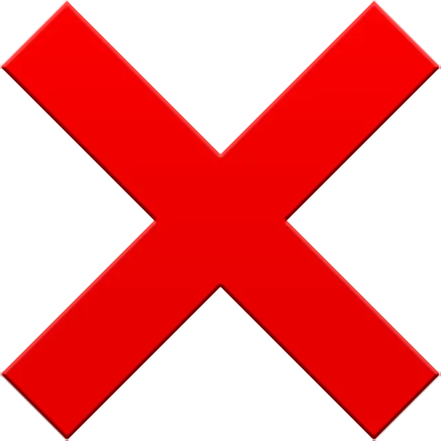

PSY21D CANCELLATION MACHINE

Гадкий, но очень прикольный код, чтобы закенселить что-либо крестиком.
Думали, что я не умею писать гадкий код и визуалы? Умею!
Инструкция по применению:
1. Copy image data into clipboard or press Print Screen
2. Press Ctrl+V
Кликнуть в нужное место картинки
Retry 1.
При незаконном использовании это оружие оторвёт вам руки.